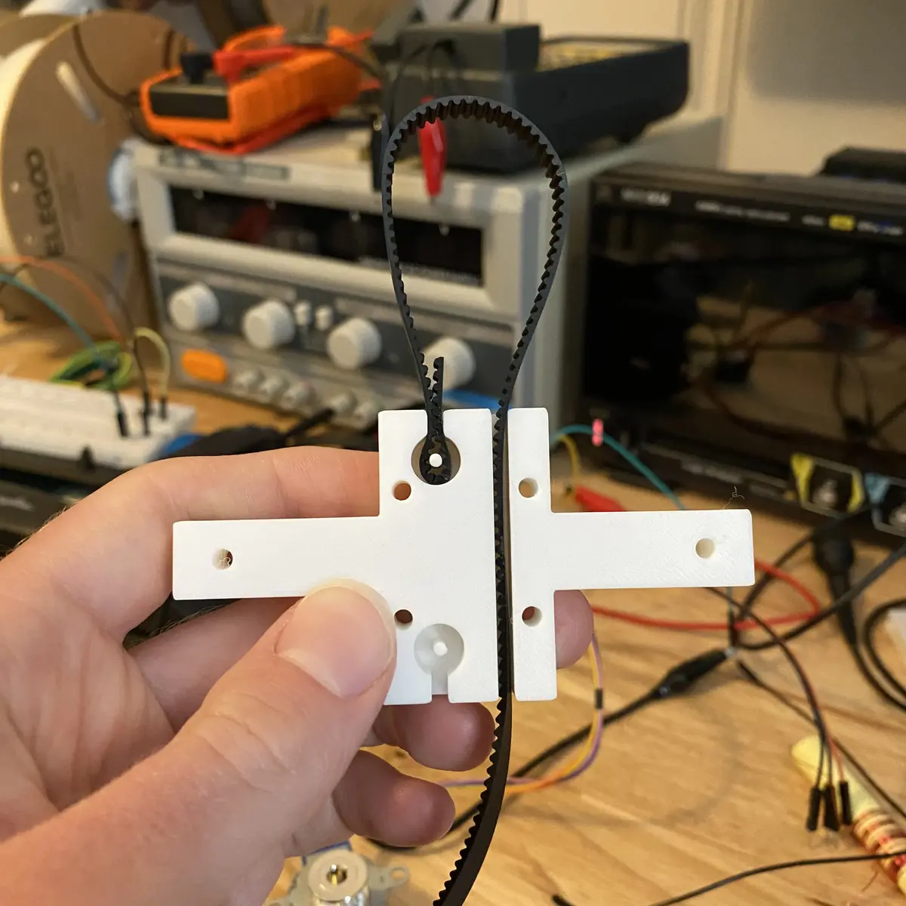
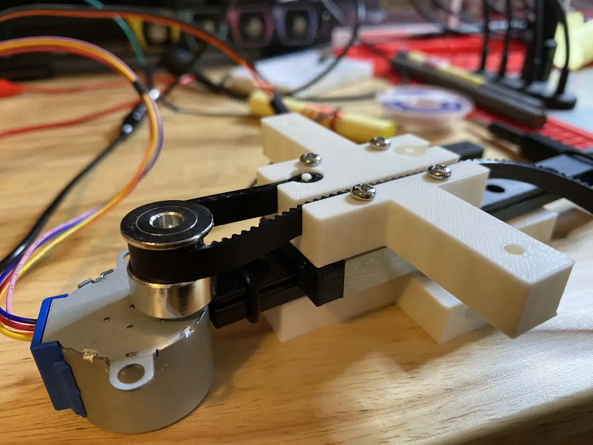
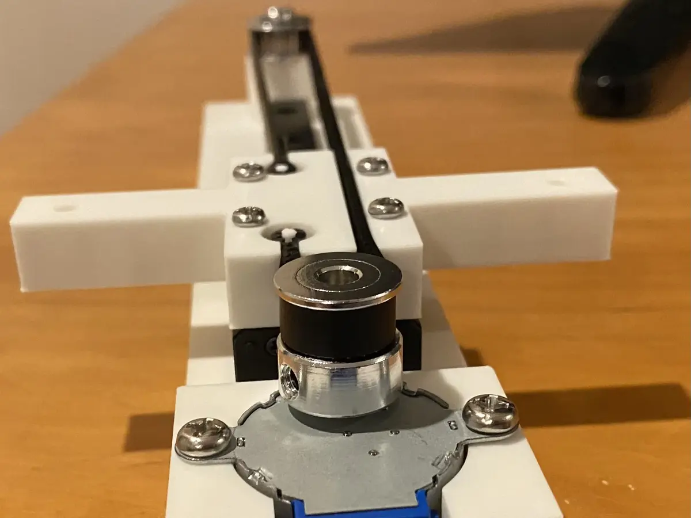

I’ve recently been working on a mechatronics project that involves constructing an X-Y cartesian motion system. I opted to use stepper motors to drive each axis, and timing belts and pulleys for translating the rotational torque of the steppers into linear motion. The timing belts need to be anchored to the component that is being actuated, which in this case is the carriage on the linear rails. Though matching toothed clamps exist, it is common, particularly in DIY projects, for timing belts to be fastened using zip ties or custom clips. These solutions leverage the fact that the timing belt, when looped back on itself and pressed together, creates a locking mechanism. As long as you have a tie or clip that can hold the teeth in their interlocking arrangement, the belt will remain fastened.

These are fine solutions, but they do require additional parts, and they can be prone to slipping if not attached tightly. An alternative option, which I first encountered in this DIY CNC drawing machine build (raft mount STL file here), is to design fasteners into the actuated component itself. As seen above, the fastener is effectively just a circular recess with a spindle for the timing belt to loop around, and an entry shaft that is approximately the width of the belt when its teeth are interlocked. I somewhat surprisingly have not seen prevalent use of this design, and I wasn’t even sure what to call it, though I eventually settled on “integrated loopback fastener” (let me know if there is an existing term for it).

Attaching the timing belt while maintaining tension can be somewhat challenging, but it is made easier with a pair of needle nose pliers. Once in place, the belt remains securely attached, though I imagine any sort of twisting force could lead to it working out of the recess over time. Outside of the elimination of additional small parts, the ease with which the belt can be detached and reattached is also a nice attribute. While iterating on this project, I frequently disengaged the belt by detaching from one of the fasteners so that I could adjust the pulleys and other components.

Though there are many options available, if you have control over design of the actuated component, the integrated timing belt loopback fastener may be worth considering.